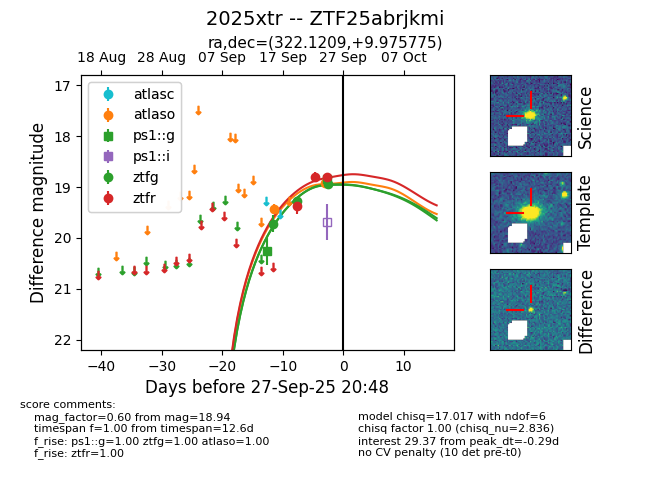
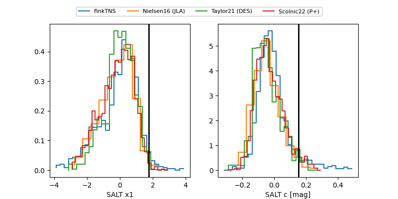

FINK: ZTF25abrjkmi
Lasair: ZTF25abrjkmi
ALeRCE: ZTF25abrjkmi
YSE: 2025xtr
ZTF25abrjkmi (ztf,fink)
2025xtr (yse)
equatorial (ra, dec) = (322.1209,+9.97578)
galactic (l, b) = (62.8259,-28.40695)


last atlaso=18.92, ps1::g=18.85, ztfg=18.94, ztfr=18.80
2 atlaso, 2 ps1::g, 3 ztfg, 3 ztfr detections